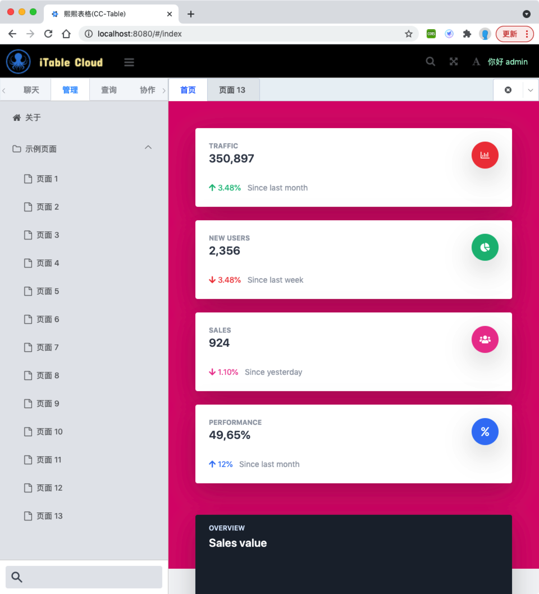
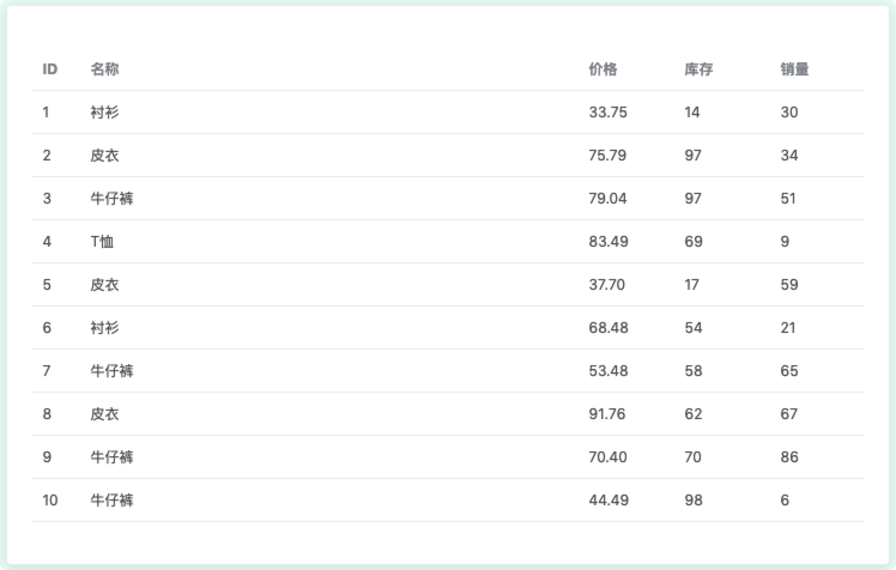
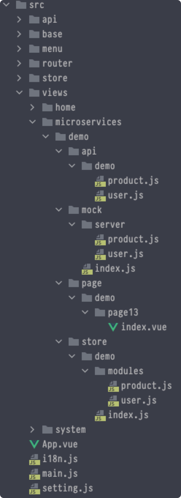

基于D2admin定制化微服务前端应用的开发方法

目录
D2Admin 是一个完全 开源免费 的企业中后台产品前端集成方案，使用最新的前端技术栈，小于 60kb 的本地首屏 js 加载，已经做好大部分项目前期准备工作，并且带有大量示例代码，助力管理系统快速开发。本文介绍基于D2admin框架进行微服务前端开发的基本思路和过程。
效果图：

一，框架部署
建议是使用 简化版起始模板 因为在完整版的基础上做减法，要比在简化版基础上做加法复杂
cd web
git clone https://github.com/d2-projects/d2-admin-start-kit.git
# or
wget https://github.com/d2-projects/d2-admin-start-kit/archive/refs/heads/master.zip
unzip d2-admin-start-kit-master.zip
mv d2-admin-start-kit-master cctable
cd cctable
# 安装依赖
npm install
# 启动
npm start
D2-admin 版本号：1.20.1（2021.5.22）
二，框架配置
安装必要插件
{
"bootstrap-vue": "^2.21.2",
"element-ui": "^2.15.1",
"vxe-table": "^3.2.9",
"xe-utils": "^3.1.13",
}
cd cctable
npm install --save bootstrap-vue
npm install --save element-ui
npm install --save xe-utils vxe-table
启用插件（main.js）
// Vue
import Vue from 'vue'
import i18n from './i18n'
import App from './App'
// 第三方插件
// ------------------------------------------------
import ElementUI from 'element-ui'
import 'element-ui/lib/theme-chalk/index.css'
import { BootstrapVue, BootstrapVueIcons } from 'bootstrap-vue'
import 'bootstrap/dist/css/bootstrap.css'
import 'bootstrap-vue/dist/bootstrap-vue.css'
import 'xe-utils'
import VXETable from 'vxe-table'
import 'vxe-table/lib/style.css'
// ------------------------------------------------
....
// 第三方插件
// ------------------------------------------------
Vue.use(ElementUI)
Vue.use(BootstrapVue)
Vue.use(BootstrapVueIcons)
Vue.use(VXETable)
Vue.prototype.$XModal = VXETable.modal
// ------------------------------------------------
安装Tailwind
cd cctable
npm install tailwindcss
touch src/assets/css/tailwind.css
## 添加如下内容
@tailwind base;
@tailwind components;
@tailwind utilities;
# 在main.js 中加入
import '@/assets/css/tailwind.css'
npx tailwind init -p
touch postcss.config.js
# 加入如下内容
const purgecss = require('@fullhuman/postcss-purgecss')({
content: [
'./src/**/*.html',
'./src/**/*.vue',
'./src/**/*.jsx',
],
// Include any special characters you're using in this regular expression
defaultExtractor: content => content.match(/[\w-/:]+(?<!:)/g) || []
})
module.exports = {
plugins: [
require('tailwindcss'),
require('autoprefixer'),
...process.env.NODE_ENV === 'production'
? [purgecss]
: []
]
}
mv .postcssrc.js .postcssrc.js.old
## 解决 PostCSS 8 不兼容问题
npm uninstall tailwindcss postcss autoprefixer
npm install -D tailwindcss@npm:@tailwindcss/postcss7-compat @tailwindcss/postcss7-compat postcss@^7 autoprefixer@^9
# 重新编译并启动
npm install
npm start
三，框架调整
Title, logo
- .env
- .env.development
Theme
- src/assets/style/theme/theme-base.scss
layout
- src/layout/header-aside/layout.vue
demo
- src/views/demo
UI 设计思路：
- 采用模块化和定制化相结合的设计思路
- 模块化：elementui/bootstrapvue
- 定制化：tailwindcss
- UI设计风格
- 管理系统导航与社交化导航相结合（左边栏）
- 管理系统UI（表格驱动）
- 操作（右边栏）
- 协作系统UI（内容驱动）
- 单人协作（弹框、右边栏、页内）
- 多人协作（表格、列表、看板等）
四，Tailwind
重要事项：
- 默认以APP模式进行UI设计，即移动端端点优先，然后依次设计各个端点相关的UI布局
五，图表插件
npm install --save v-charts echarts@4.9.0
## main.js
import VCharts from 'v-charts'
Vue.use(VCharts)
六，表格插件
npm install --save @d2-projects/d2-crud
## main.js
import D2Crud from '@d2-projects/d2-crud'
Vue.use(D2Crud)
七，数据管理
基本思路：
- 采用MAVP模式进行开发
- Mock （模拟后端服务器，设计后端数据库和API）
- Api （封装axios调用后端API，测试时封装MOCK，后续可以替换为真实后端Server）
- Vuex （使用vuex缓存数据，调用API获取后端数据，Vuex相当于前端数据库）
- Page（前端页面，调用vuex缓存接口对数据进行展示和处理）
安装mockjs
npm install --save mockjs
response.payload 的标准化处理（通信协议）
// src/mock/result.js
const Ok = function(data, msg) {
let the_msg = 'ok'
if (msg) {
if (msg !== '') {
the_msg = msg
}
}
let the_data = {}
if (data) {
the_data = data
}
let a_result = {
success: true,
code: 'server-api-ok',
error: {},
response: {
data: the_data,
msg: the_msg,
expired: false,
}
}
return a_result
}
const Error = function(msg, data) {
let the_msg = 'error'
if (msg) {
if (msg !== '') {
the_msg = msg
}
}
let the_data = {}
if (data) {
the_data = data
}
let a_result = {
success: false,
code: 'server-api-error',
response: {},
error: {
data: the_data,
msg: the_msg,
expired: false,
}
}
return a_result
}
export default {
Ok, Error
}
引入 axios 拦截插件
// src/plugin/axios/index.js
import store from '@/store'
import axios from 'axios'
import { Message } from 'element-ui'
import util from '@/libs/util'
// 创建一个错误
function errorCreate (msg) {
const error = new Error(msg)
errorLog(error)
throw error
}
// 记录和显示错误
function errorLog (error) {
// 添加到日志
store.dispatch('d2admin/log/push', {
message: '数据请求异常',
type: 'danger',
meta: {
error
}
})
// 打印到控制台
if (process.env.NODE_ENV === 'development') {
util.log.danger('>>>>>> Error >>>>>>')
console.log(error)
}
// 显示提示
Message({
message: error.message,
type: 'error',
duration: 5 * 1000
})
}
// 创建一个 axios 实例
const service = axios.create({
baseURL: process.env.VUE_APP_API,
timeout: 5000 // 请求超时时间
})
// 请求拦截器
service.interceptors.request.use(
config => {
// 在请求发送之前做一些处理
const token = util.cookies.get('token')
// 让每个请求携带token-- ['X-Token']为自定义key 请根据实际情况自行修改
config.headers['X-Token'] = token
return config
},
error => {
// 发送失败
console.log(error)
return Promise.reject(error)
}
)
// 响应拦截器
service.interceptors.response.use(
response => {
// dataAxios 是 axios 返回数据中的 data
const dataAxios = response.data
// 这个状态码是和后端约定的
//console.log("dataAxios: ", dataAxios);
const { code } = dataAxios
// 根据 code 进行判断
if (code === undefined) {
// 如果没有 code 代表这不是项目后端开发的接口 比如可能是 D2Admin 请求最新版本
return dataAxios
} else {
// 有 code 代表这是一个后端接口 可以进行进一步的判断
const result = dataAxios
switch (code) {
case 'server-api-ok':
break
case 'server-api-error':
errorCreate(`[ code: server-api-error ] ${result.error.msg}: ${response.config.url}`)
break
case 'server-api-expired':
errorCreate(`[ code: server-api-expired ] ${result.response.data.api_name}: ${response.config.url}`)
break
default:
// 不是正确的 code
errorCreate(`${dataAxios.code}: ${response.config.url}`)
break
}
// console.log("result: ", result);
return result
}
},
error => {
console.log('catch error: ', error)
if (error && error.response) {
switch (error.response.status) {
case 400: error.message = '请求错误'; break
case 401: error.message = '未授权，请登录'; break
case 403: error.message = '拒绝访问'; break
case 404: error.message = `请求地址出错: ${error.response.config.url}`; break
case 408: error.message = '请求超时'; break
case 500: error.message = '服务器内部错误'; break
case 501: error.message = '服务未实现'; break
case 502: error.message = '网关错误'; break
case 503: error.message = '服务不可用'; break
case 504: error.message = '网关超时'; break
case 505: error.message = 'HTTP版本不受支持'; break
default: break
}
}
errorLog(error)
return Promise.reject(error)
}
)
export default service
定义前端数据库（Mock）
// src/mock/demo/product.js
const Mock = require('mockjs')
const Random = Mock.Random
import Results from '../result'
const titleList = ['男士上衣', 'T恤', '衬衫', '牛仔裤', '皮衣', '短裙'];
// 定义数据表
// ----------------------
var table_products = [];
// 定义数据表结构
// ----------------------
const init_table = function() {
table_products = [];
for (let i = 0; i < 10; i++) {
let product = {
id: i + 1,
title: titleList[Math.floor(Math.random()*titleList.length)],
price: Random.float(10, 100).toFixed(2),
stock: Random.integer(10, 100),
saleCount: Random.integer(0, 90),
isSale: Random.integer(0, 1),
createTime: Random.datetime(),
imgUrl: Random.dataImage('60x60', 'ZAdmin-' + (i + 1)),
}
table_products.push(product)
}
}
// 定义 CRUD 接口
// ----------------------
const get_all_products = function () {
let data = {products: table_products}
return Results.Ok(data)
}
// 定义 API
// ----------------------
init_table()
Mock.mock('/demo/product/get_all_products', 'get', get_all_products);
定义 API 接口（API）
// src/api/demo/product.js
import request from '@/plugin/axios'
// 定义 API 调用
// --------------------------
export default {
get_all_products: function() {
return request({
url: 'demo/product/get_all_products',
method: 'get',
data: {}
})
},
}
定义数据缓存（Vuex）
// src/store/modules/demo/modules/product.js
import ProductService from '@/api/demo/product'
// 定义缓存
// ------------------------------
export default {
namespaced: true,
// 缓存数据
state: {
products: [],
},
getters: {
products: (state) => { return state.products },
},
mutations: {
get_all_products(state, data) {
//console.log("in store.mutations.get_all_products.")
state.products = data
}
},
// 缓存 CRUD 异步接口
actions: {
async get_all_products ({ commit }) {
//console.log("in store.actions.get_all_products.")
let rs = await ProductService.get_all_products()
if (rs.success === false) {
return rs
}
commit('get_all_products', rs.response.data.products)
return rs
},
},
}
页面调用（Page）
// src/views/demo/page13/index.vue
<template>
<d2-container type="full" class="overflow-y-scroll">
<div class="container mx-auto mt-4 mb-4">
<el-card>
<d2-crud
ref="d2Crud"
:columns="columns"
:data="products"
>
</d2-crud>
</el-card>
</div>
</d2-container>
</template>
<script>
import { mapGetters } from 'vuex'
export default {
name: 'page11',
data: function () {
return {
columns: [
{ title: 'ID', key: 'id', width: '40'},
{ title: '名称', key: 'title' },
{ title: '价格', key: 'price', width: '80'},
{ title: '库存', key: 'stock', width: '80'},
{ title: '销量', key: 'saleCount', width: '80'},
],
}
},
computed: {
...mapGetters('demo/product', ['products'])
},
methods: {
async get_all_products() {
await this.$store.dispatch("demo/product/get_all_products");
}
},
async mounted () {
await this.get_all_products();
}
}
</script>
引入 MOCK 数据
// main.js
// 引入mock数据
import mock_data from '@/mock'
测试：实现Page-Vuex-API-Mock(server) 的调用

八，认证管理
Mock
// src/mock/demo/user.js
const Mock = require('mockjs')
import Results from '../result'
// 定义数据表
// ----------------------
var table_users = []
// 定义数据表结构
// ----------------------
const init_table = function() {
table_users = [
{ user_name: 'admin', password: 'admin', uuid: 'admin-uuid', role: 'admin', token: 'admin-uuid', is_login: false },
{ user_name: 'editor', password: 'editor', uuid: 'editor-uuid', role: 'editor', token: 'editor-uuid', is_login: false},
{ user_name: 'user1', password: 'user1', uuid: 'user1-uuid', role: 'user', token: 'user1-uuid', is_login: false }
];
}
// 定义 CRUD 接口
// ----------------------
const get_all_users = function (request) {
const params = JSON.parse(request.body)
if (!params.user_token) {
return Results.Error('no user_token')
}
const user = table_users.find(e => e.token === params.user_token)
if (!user) {
return Results.Error('user_token is fault.')
}
return Results.Ok({users: table_users } )
}
const get_user_info = function(request) {
const params = JSON.parse(request.body)
if (!params.user_token) {
return Results.Error('no user_token')
}
if (!params.user_uuid) {
return Results.Error('no user_uuid')
}
const user = table_users.find(e => e.uuid === params.user_uuid)
if (user) {
if (user.user_token === params.user_token) {
return Results.Ok(
{
user: {
user_name: user.user_name,
user_uuid: user.uuid,
user_role: user.role,
user_is_login: user.is_login,
}})
} else {
return Results.Error("user_token is fault.")
}
} else {
return Results.Error("user_uuid is fault.")
}
}
const login = function(request) {
const params = JSON.parse(request.body)
if (!params.user_name) {
return Results.Error('no user_name')
}
if (!params.user_password) {
return Results.Error('no user_password')
}
const user = table_users.find(e => e.user_name === params.user_name && e.password === params.user_password)
if (user) {
user.is_login = true
return Results.Ok({
user: {
user_name: user.user_name,
user_uuid: user.uuid,
user_role: user.role,
user_token: user.token,
user_is_login: user.is_login,
}
})
} else {
return Results.Error('user_name or user_password is error.')
}
}
const logout = function(request) {
const params = JSON.parse(request.body)
if (!params.user_uuid) {
return Results.Error('no user_uuid')
}
if (!params.user_token) {
return Results.Error('no user_token')
}
const user = table_users.find(e => e.uuid === params.user_uuid && e.token === params.user_token)
if (user) {
user.is_login = false
return Results.Ok(
{user: {
user_name: user.user_name,
user_uuid: user.uuid,
user_role: user.role,
user_is_login: user.is_login,
}})
} else {
return Results.Error('user_uuid or user_token is error.')
}
}
// 定义 API
// ----------------------
init_table()
Mock.mock('/demo/user/get_all_users', 'get', get_all_users);
Mock.mock('/demo/user/get_user_info', 'post', get_user_info);
Mock.mock('/demo/user/login', 'post', login);
Mock.mock('/demo/user/logout', 'post', logout);
API
// src/api/demo/user.js
import request from '@/plugin/axios'
// 定义 API 调用
// --------------------------
export default {
get_all_users: function(data) {
return request({
url: 'demo/user/get_all_users',
method: 'get',
data: data
})
},
get_user_info: function(data) {
return request({
url: 'demo/user/get_user_info',
method: 'post',
data: data
})
},
login: function(data) {
return request({
url: 'demo/user/login',
method: 'post',
data: data
})
},
logout: function(data) {
return request({
url: 'demo/user/logout',
method: 'post',
data: data
})
},
}
Vuex
// src/store/modules/demo/modules/user.js
import { Message, MessageBox } from 'element-ui'
import util from '@/libs/util.js'
import router from '@/router'
import Results from '@/data/demo/result'
import UserService from '@/api/demo/user'
// 定义缓存
// ------------------------------
export default {
namespaced: true,
// 缓存数据
state: {
users: [],
},
getters: {
users: (state) => { return state.users }
},
mutations: {
get_all_users(state, data) {
state.users = data
}
},
// 缓存 CRUD 异步接口
actions: {
async get_all_users ({ commit }) {
//console.log("in store.actions.get_all_products.")
let rs = await UserService.get_all_users()
if (rs.success === false) {
return rs
}
commit('get_all_users', rs.response.data.users)
},
async login({ dispatch }, {user_name = '', user_password = ''} = {}) {
let rs = await UserService.login({user_name, user_password})
if (rs.success === false) {
return Results.Error()
}
util.cookies.set('uuid', rs.response.data.user.user_uuid)
util.cookies.set('token', rs.response.data.user.user_token)
let user_info = rs.response.data.user
sessionStorage.setItem("user_info", JSON.stringify(user_info))
await dispatch('d2admin/user/set', { user_name: rs.response.data.user.user_name, user_uuid: rs.response.data.user.user_uuid }, { root: true })
await dispatch('load')
return Results.Ok(rs.response.data)
},
async logout({ commit, dispatch }, { confirm = false} = {}) {
async function logout() {
let user_uuid = util.cookies.get("uuid")
let user_token = util.cookies.get("token")
util.cookies.remove('uuid')
util.cookies.remove('token')
sessionStorage.removeItem("user_info")
await dispatch('d2admin/user/set', {}, { root: true })
await UserService.logout({user_uuid, user_token})
router.push({ name: 'login' })
}
if (confirm) {
commit('d2admin/gray/set', true, { root: true })
MessageBox.confirm('确定要注销当前用户吗', '注销用户', { type: 'warning' })
.then(() => {
commit('d2admin/gray/set', false, { root: true })
logout()
})
.catch(() => {
commit('d2admin/gray/set', false, { root: true })
Message({ message: '取消注销操作' })
})
}
return Results.Ok()
},
async load ({ dispatch }) {
// 加载用户名
await dispatch('d2admin/user/load', null, { root: true })
// 加载主题
await dispatch('d2admin/theme/load', null, { root: true })
// 加载页面过渡效果设置
await dispatch('d2admin/transition/load', null, { root: true })
// 持久化数据加载上次退出时的多页列表
await dispatch('d2admin/page/openedLoad', null, { root: true })
// 持久化数据加载侧边栏配置
await dispatch('d2admin/menu/asideLoad', null, { root: true })
// 持久化数据加载全局尺寸
await dispatch('d2admin/size/load', null, { root: true })
// 持久化数据加载颜色设置
await dispatch('d2admin/color/load', null, { root: true })
return Results.Ok()
}
},
}
View
// src/views/system/login/page.vue
// src/layout/header-aside/components/header-user/index.vue
测试

九，微服务项目结构
/src/base 是基础框架（请勿修改）
/src/views/microservices 下创建微服务模块：demo，项目组织结构如下：
- Mock（模拟后端服务）
- API（定义API接口）
- Store（定义前端数据缓存Vuex）
- Page（定义前端页面）
项目集成方法：
- 将microservices目录下的微服务目录（例如demo）拷贝到主程序的microservice目录下
- 在router目录下加入路由信息
- 在menu目录下加入菜单信息

参考代码：https://github.com/taodanfang/d2admin-microservices-template